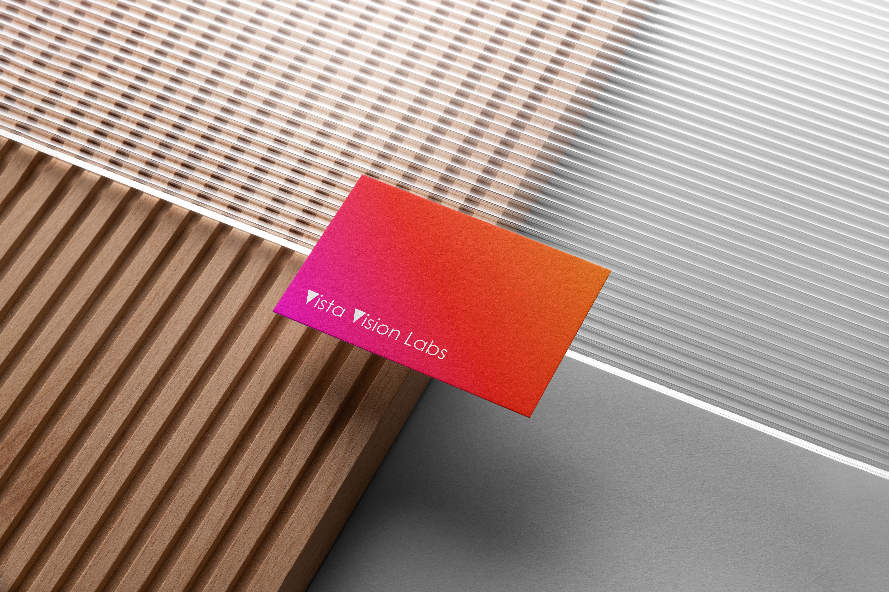
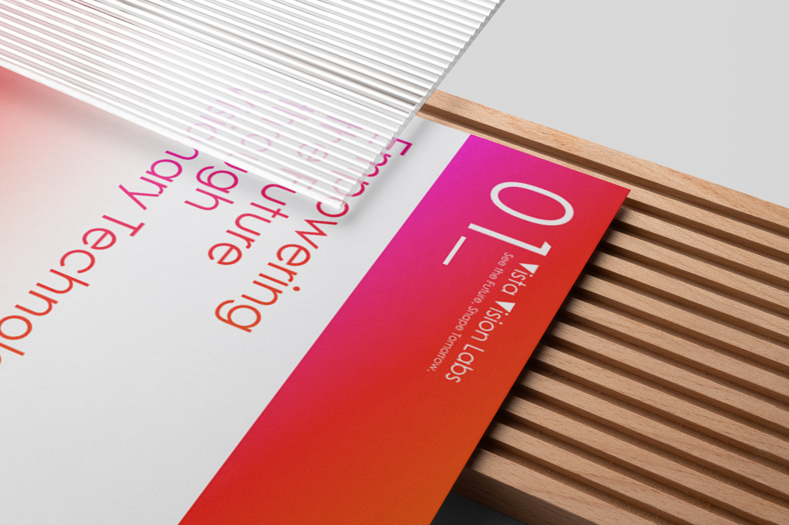
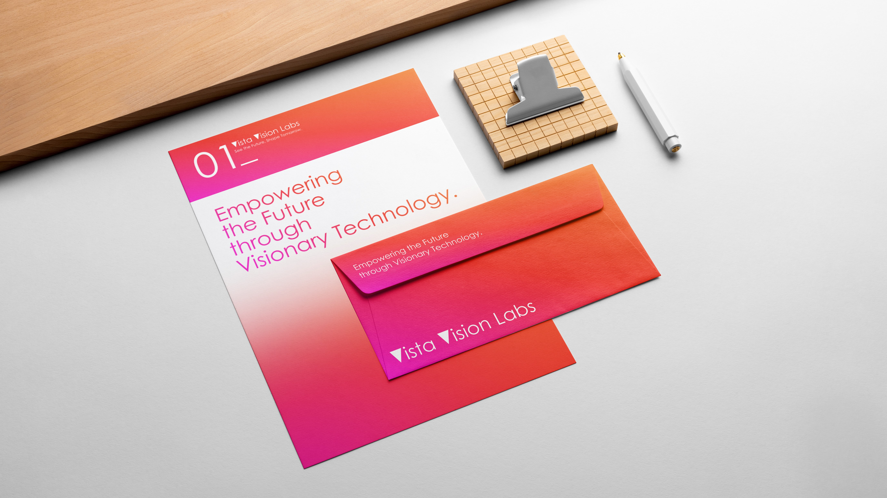
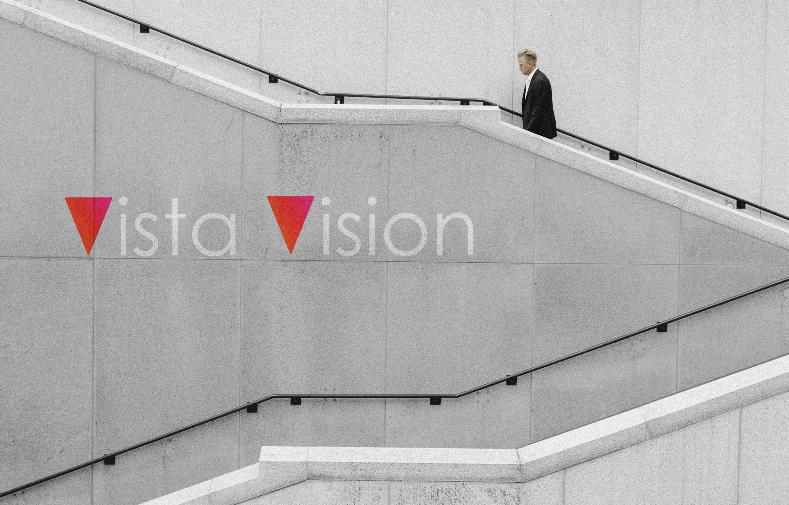

Gradient
The orange-to-magenta field gives the lab a warm signal that can live across cards, documents, and digital icons.
A visual identity for Vista Vision Labs that pairs warm gradients with clean technical surfaces, from stationery to app-icon presence.

The orange-to-magenta field gives the lab a warm signal that can live across cards, documents, and digital icons.
Sharp typography and wide spacing make the name feel analytical, while the color system keeps it energetic.
The identity is tested on tactile print materials, architectural scenes, and a phone home screen to show range.


